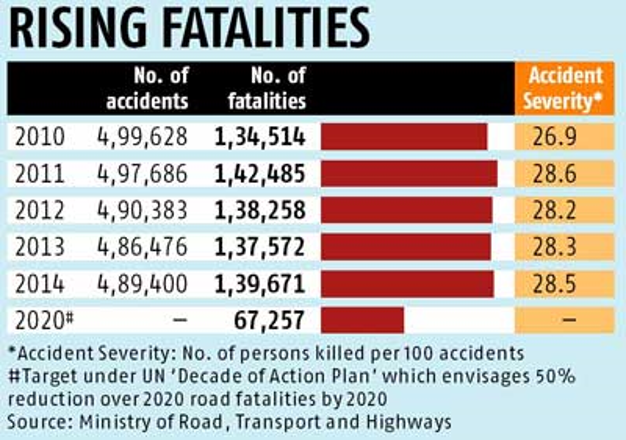
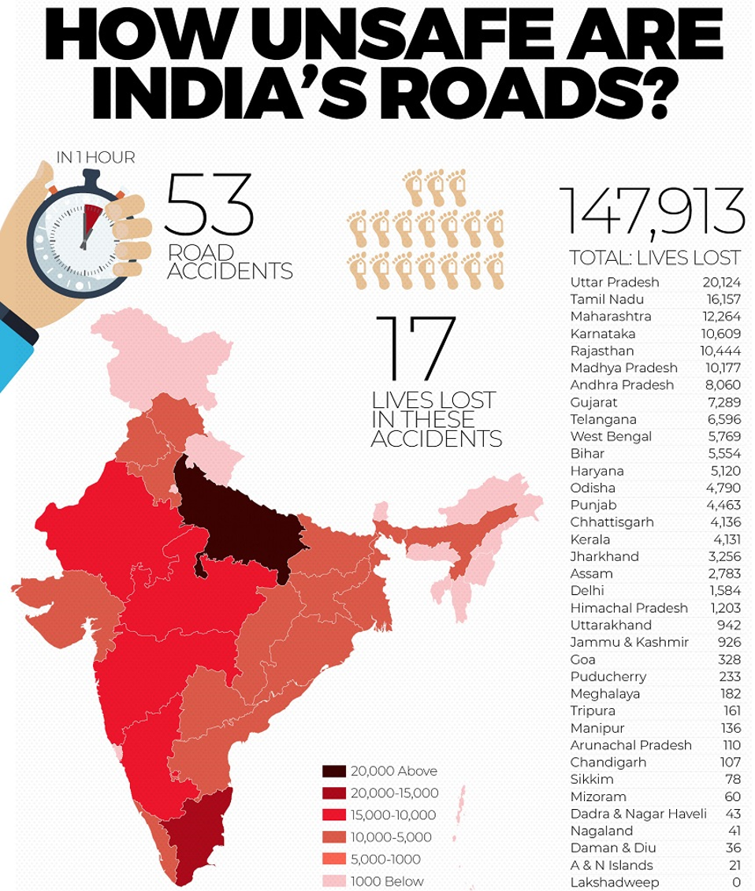

Rash Driver Statistics
World Health Organisation on Road Safety
The Global status report by WHO on road safety reaffirms our understanding of road traffic injuries as a global health and development problem. More than 1.2 million people die on the world’s roads every year, and as many as 50 million others are injured. Over 90% of the deaths occur in low-income and middle-income countries.
With the Global status report on road safety, we have for the first time an assessment on the status of road safety around the globe. This unique and comparable set of data confirms the relevance of this issue to the societal challenges of today. It identifies clear gaps and opportunities and inspires us to action.
The WHO Global Burden of Disease project, which uses vital registration (death certificate) data irrespective of the time period between collision and death, estimates that 1.27 million people die as a result of a road traffic collision annually.

The total number of deaths reported in this survey is approximately 6,60,000 (using a 30-day definition), indicating vast under-reporting. When these data are modelled, the total 30-day number for the 178 countries included in the study is 1.23 million. Almost all data sources show that about three-quarters of road traffic deaths are among men and that the highest impact is in the economically active age ranges. Based on modelled numbers, the 10 countries with the highest number of deaths are: China, India, Nigeria, the United States, Pakistan, Indonesia, the Russian Federation, Brazil, Egypt and Ethiopia. Unless proper action is taken, road traffic injuries are predicted to become the fifth leading cause of death by 2030.
UN WHO Statistics
Population
Nearly 1.25 million people die in road crashes each year, on average 3,287 deaths a day. An additional 20-50 million are injured or disabled.
Registered Vehicles
Aprroximately 75% of road accidents occur in LIC & MIC where driver is below legal age, does not have a valid liscense or is registered offender.
Road Traffic Deaths
Over 90% of all road fatalities occur in low and middle-income countries, which have less than half of the world’s vehicles.
The Indian Scenario

One serious road accident in the country occurs every minute and 16 die on Indian roads every hour: Traffic collision-related deaths increased from 13 per hour in 2008 to 14 per hour in 2009. More than 40 per cent of these casualties are associated with motorcycles and trucks. The most collision-prone time on Indian roads is during the peak hour at afternoon and evening.
1214 road crashes occur every day in India: Adjusted for 182.45 million vehicles and its 1.31 billion population, India reported a traffic collision rate of about 0.8 per 1000 vehicles in 2015 compared to 0.9 per 1000 vehicles in 2012, and an 11.35 fatality rate per 100,000 people in 2019.
20 children under age of 14 die every day due to road crashes: Between 2014 and 2019, 3,885 children died in motor vehicle accidents — an average of 11 children/week.
Two people die every hour in Uttar Pradesh – State with maximum number of road crash deaths: A total of 22,256 fatalities have been reported in the state last year, up 10.6 per cent compared to 2018, when it registered 20,124 deaths due to road accidents..
Tamil Nadu is the state with the maximum number of road crash injuries: According to a report released by the Tamil Nadu Police in 2013, there were a total of 15,563 fatalities in 14,504 recorded collisions. The corresponding number of people sustaining grievous injuries in 4,715 collisions was 6,513, and the number of people who sustained minor injuries was 69,168 in 44,158 collisions.
The Global status report on road safety 2018 estimates that more than 2,31,000 people are killed in road traffic crashes in India every year. Approximately half of all deaths on the country's roads are among vulnerable road users - motorcyclists, pedestrians and cyclists.
Top 10 Cities with the highest number of Road Crash Deaths (Rank –Wise): Delhi (City), Chennai, Jaipur, Bengaluru, Mumbai, Kanpur, Lucknow, Agra, Hyderabad and Pune.